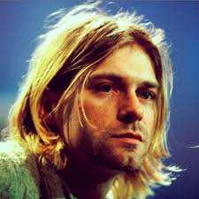
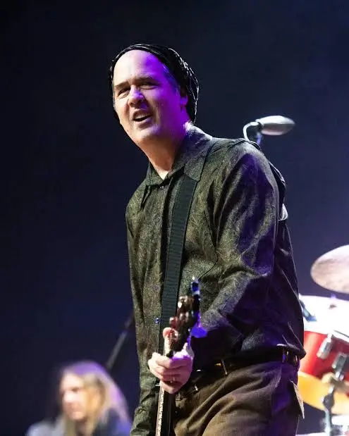
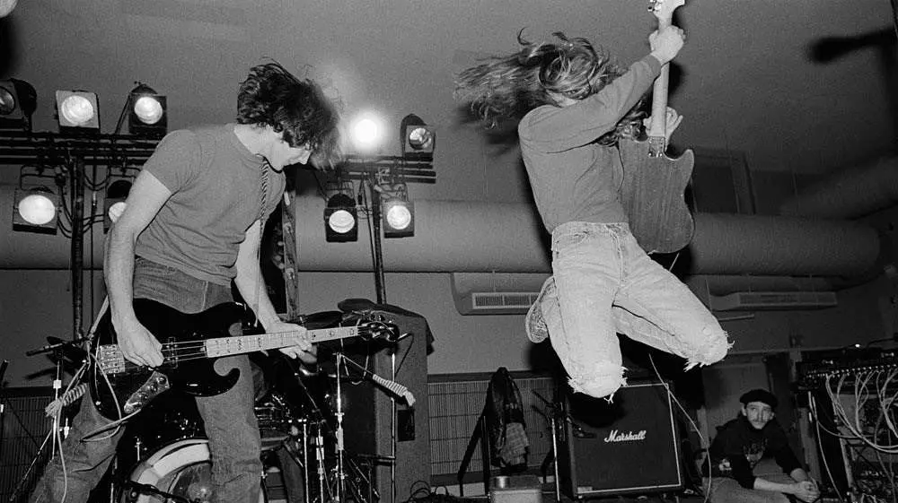
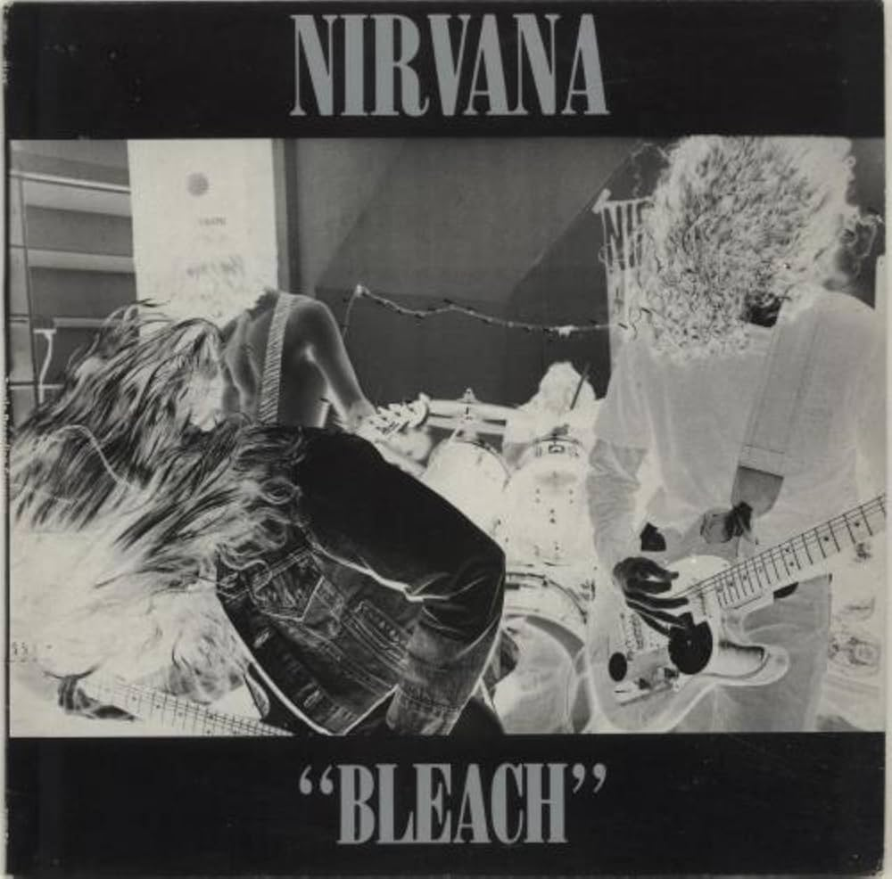
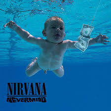
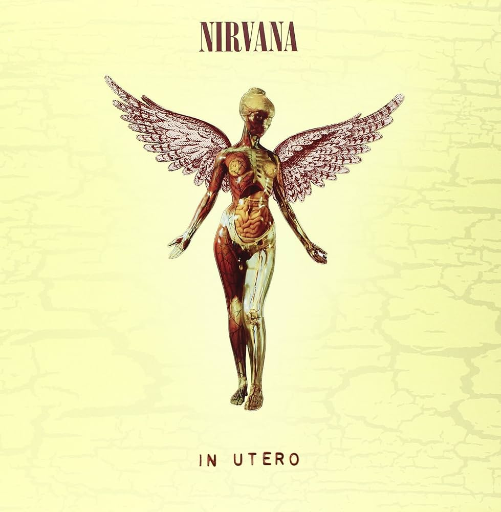

Nirvana: Эпос о Гранж-Революции и Культурном Сломе
Nirvana — это не просто музыкальный феномен, это точка невозврата, после которой ландшафт мировой культуры изменился навсегда. Возникнув в туманных, индустриальных декорациях штата Вашингтон, группа стала голосом миллионов «потерянных» молодых людей, которые не находили себя в глянцевой эстетике 80-х. Курт Кобейн, обладавший редким даром превращать личную агонию в универсальные гимны, смог соединить первобытную ярость панк-рока с меланхоличной мелодикой поп-музыки 60-х. Это был идеальный шторм, который разрушил доминирование глэм-метала и вывел андерграунд на стадионы, заставив весь мир носить фланелевые рубашки и рваные джинсы.
К началу 1992 года влияние группы достигло апогея: их альбом «Nevermind» не просто продавался миллионными тиражами, он изменил саму бизнес-модель индустрии звукозаписи. Nirvana доказала, что искренность и нежелание идти на компромиссы могут быть коммерчески успешными. Однако эта же слава стала для коллектива тяжелым бременем, создав невыносимое давление на психику Кобейна. В 2026 году наследие группы изучается не только музыковедами, но и социологами, как пример того, как искусство может стать мощнейшим инструментом социальных изменений, оставаясь при этом глубоко личным и болезненным высказыванием.
Архитекторы Хаоса: Личности и Судьбы

Курт Кобейн — Пророк Аутсайдеров

Крист Новоселич — Бас и Совесть
Дэйв Грол — Мотор и Наследие
Эволюция Звукового Ландшафта

Путь группы начался с альбома Bleach (1989), который был записан за рекордные 30 часов. В то время звук Nirvana был максимально тяжелым и абразивным, впитал в себя влияние сладжа и агрессивного панка. Тексты песен того периода были циничными и грубыми, отражая разочарование провинциальной жизнью. Группа выступала в крошечных клубах, часто играя перед парой десятков человек, но именно в этом хаосе ковался их уникальный стиль «тихо-громко», который позже станет стандартом альтернативы.
Переход к Nevermind стал настоящей революцией в продакшне. Продюсер Бутч Виг применил технику многослойной записи гитар, создав «стену звука», которая была одновременно агрессивной и кристально чистой. Это позволило мелодиям Кобейна прорваться сквозь дисторшн прямо к слушателю. К 2026 году этот альбом признан техническим эталоном: современные звукорежиссеры до сих пор пытаются воссоздать тот самый баланс между гаражной грязью и студийным совершенством, который сделал Nirvana величайшей группой планеты.
Дискография: Глубокая Анатомия Шедевров

Bleach (1989)

Nevermind (1991)

In Utero (1993)
Хронология: От Подвалов до Вечности
Формирование дуэта Кобейна и Новоселича. Они репетируют в заброшенных помещениях Абердина, часто меняя барабанщиков и названия групп. Первая демо-запись с Джеком Эндино привлекает внимание локальных лейблов.
Выход 'Bleach' и первые гастроли по США и Европе на старом фургоне. Постоянная текучка кадров за барабанами прекращается с приходом Дэйва Грола из группы Scream. Группа начинает писать материал для 'Nevermind', который звучит заметно мелодичнее.
Год великого перелома. Выход сингла 'Smells Like Teen Spirit' в сентябре вызывает эффект разорвавшейся бомбы. К концу года группа становится самой востребованной на планете, а Курт Кобейн — невольным кумиром миллионов.
Борьба со славой и внутренними демонами. Курт женится на Кортни Лав. Группа выпускает 'In Utero' — альбом, который должен был отсеять мейнстримных фанатов, но лишь укрепил статус Nirvana как величайшей группы современности.
Последнее турне по Европе. В марте Курт впадает в кому в Риме. 5 апреля 1994 года лидер группы кончает жизнь самоубийством в своем доме в Сиэтле. Группа официально прекращает существование, уходя в бессмертие.
Сегодня Nirvana — это фундамент рок-культуры. Песни группы используются в виртуальных мирах, их архивы оцифрованы нейросетями для сохранения качества, а новые поколения музыкантов продолжают учиться на их честности и драйве.

Завершая обзор, важно понимать, что Nirvana не просто создала музыку, она создала безопасное пространство для тех, кто чувствует себя «не таким». В 2026 году, когда мир перегружен искусственным интеллектом и цифровым шумом, аналоговая, сырая энергия Кобейна кажется еще более ценной. Группа научила нас, что несовершенство — это и есть настоящая красота, а громкий крик может быть самым тихим признанием в любви.
Их влияние прослеживается во всем: от дизайна одежды до структуры современных поп-песен. Nirvana остается эталоном рок-группы — яркой, скоротечной и трагически прекрасной. Пока в мире есть хоть один подросток с гитарой и чувством несправедливости, музыка Nirvana будет звучать в его сердце, напоминая, что он не одинок.